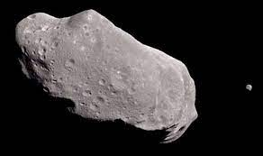
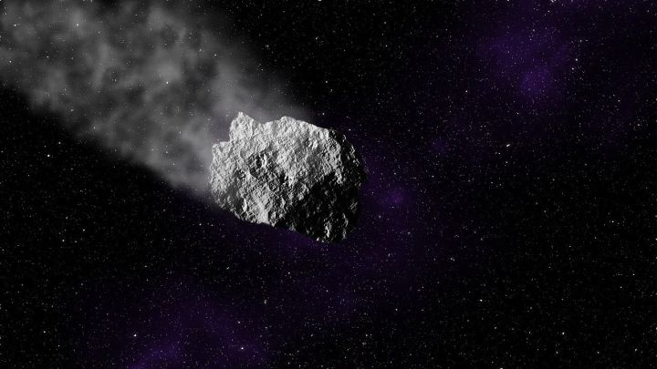
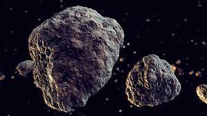
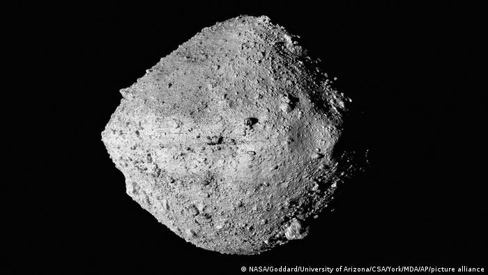
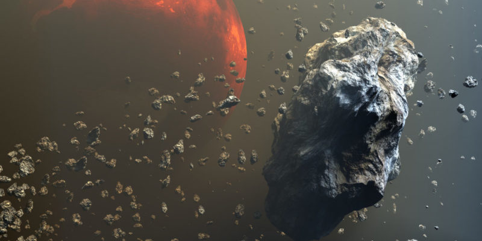

Los Asteroides
Un asteroide es un cuerpo celeste rocoso, más pequeño que un planeta y mayor que un meteoroide.
La palabra asteroide procede del griego, ἀστεροειδής, y significa «de figura estelar», en referencia al aspecto que presentan cuando son vistos con un telescopio.





Los asteroides se clasifican en función de su ubicación, composición o agrupamiento.
- Los asteroides del Cinturón de asteroides. Son los que orbitan en el espacio o frontera, entre Marte y Júpiter.
- Los asteroides Centauros. Son lo que orbitan en la frontera entre Júpiter o Saturno, y entre Urano o Neptuno, respectivamente.
- Los asteroides Troyanos. Son los que comparten la órbita de un planeta, pero no suelen impactar.